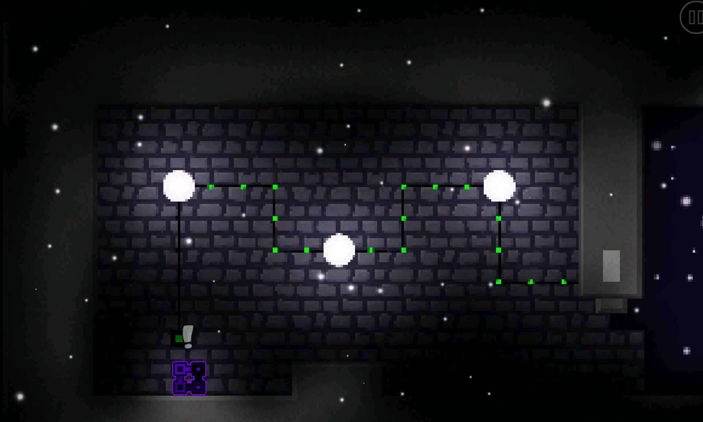
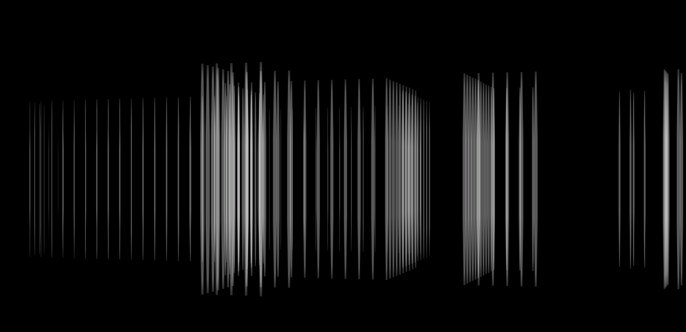
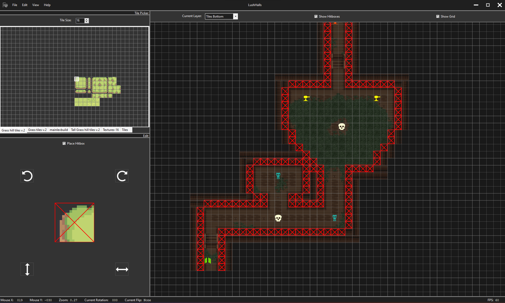
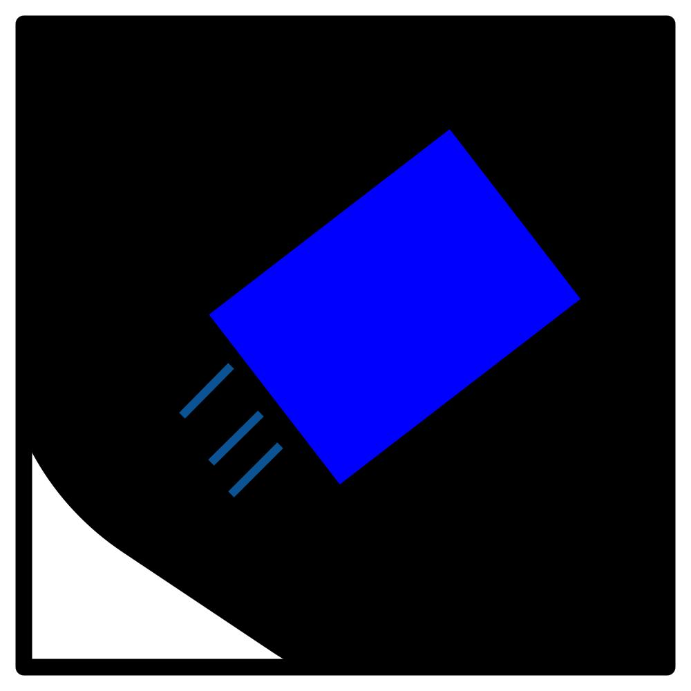
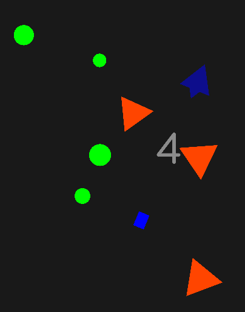

Buffscript

In the side-scrolling game called Geometry Dash, I created my own programming syntax using objects called triggers which I called "Buffscript". I used these triggers to make my own system for writing code which could be used to make much more complicated and advanced procedures possible. I created a game utilizing this syntax which took about 2 months and the final result was very well received gaining over 100k downloads on this server and receiving the rating "epic" which is a very prestigious award to be given to a level.
I learned many different skills from the experience. The most important skill is problem solving. Because this is just an editor inside of a game, there are many severe limitations. Being able to solve problems and figure out creative solutions was almost a given if I wanted to make anything in it. The other skill I learned from it was how to make an engaging game. Using feedback I received on my first level that I had posted using my syntax, I created a game which was very well received gaining over 100k downloads called Little Light.
I am currently building a raycasting engine within the game

Link
Railgun Editor

Worked on a team creating a top down shooter. I specifically worked on the level editor which
gave the user a rich experience by using MonoGame.Forms which allowed for having MonoGame run
in a panel or control. Notable features included infinite map size, multiple layers, tile
texture manipulation, texture slicing, entity placement, and hitbox placement.
Link
Whitespace

This was created during a 1 week game jam for an arcade machine. The theme was "up" and the game
had the player manipulate time and fling themselves up to avoid the white wave from below.
Link
